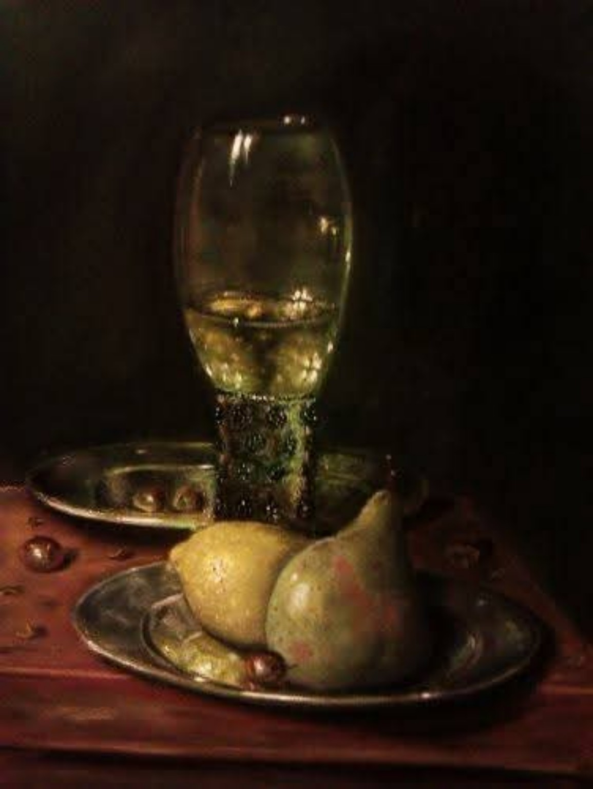

Nature morte
Vidrecome pour Régis
Le vidrecome est un grand verre à boire que les convives se passaient tour à tour, utilisé au XVIIᵉ siècle. Souvent représenté dans les natures mortes néerlandaises, il devient un objet de lumière où se mêlent les reflets et les transparences. Cette œuvre a été réalisée pour un ami, dans la tradition des natures mortes de Pieter Claesz. J'y retrouve ce qui me fascine dans le clair-obscur : faire dialoguer le verre, le métal, les fruits et la lumière.
Demander des informations →← Retour à la galerie